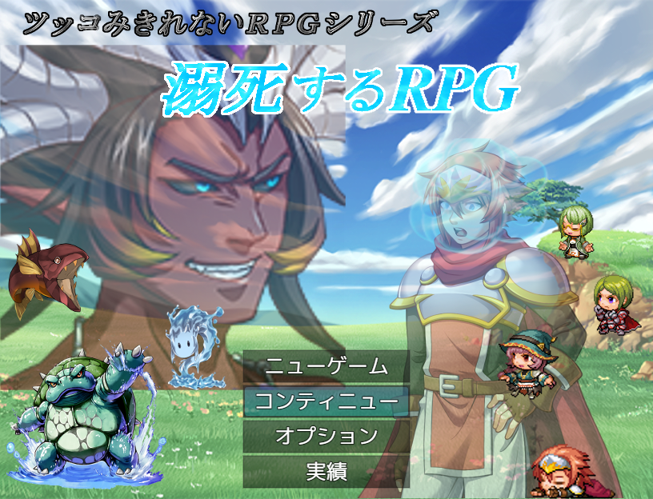

|
 |
|||
作者のコメント主人公がすぐ溺死してしまう笑いあり、熱さあり、切なさありのネタゲー。彼を死なせないように気をつけながら魔王を倒そう！ 本作のコンセプトは「誰でもクリアできること」です。 戦闘システムは少々厄介ですが ＲＰＧ初心者でもクリアできるようにゲームオーバー時には 難易度を下げ続けられる救済措置や戦闘のヒントを設けてあります。 お気軽にプレイしてください。 反面、高難易度はボスごとに違う立ち回りが求められ ＲＰＧ熟練者も一筋縄ではいかないでしょう。 非常に「戦闘が楽しい」ＲＰＧになっております！ 主催のコメントこの季節になると水難事故が多くなるので皆さんも気をつけましょう。 |
|||
| DL(472.3 MB) | 感想掲示板 | ||